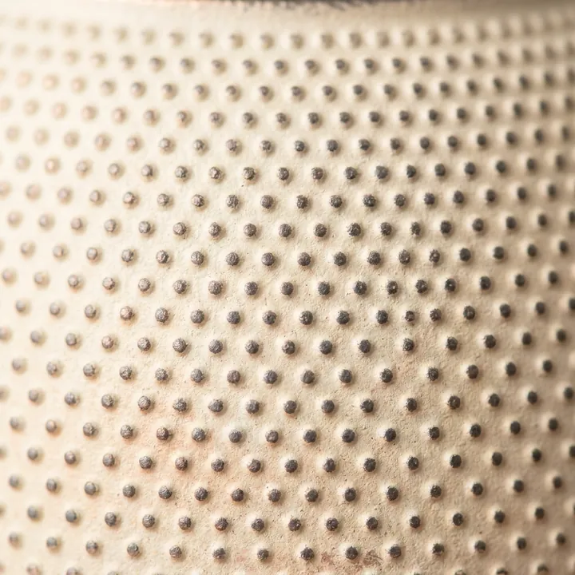
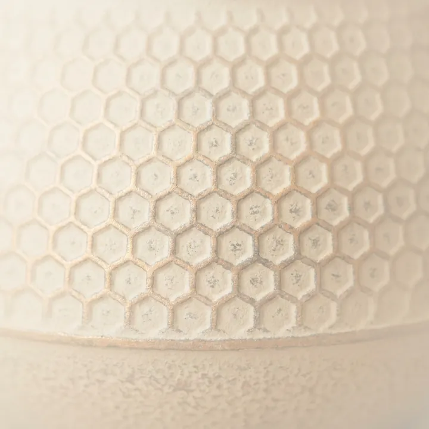
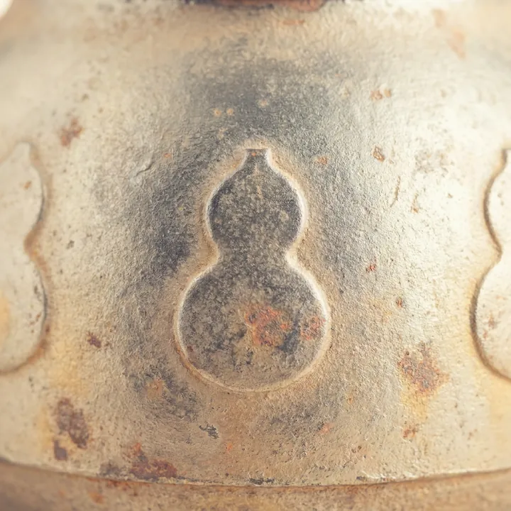
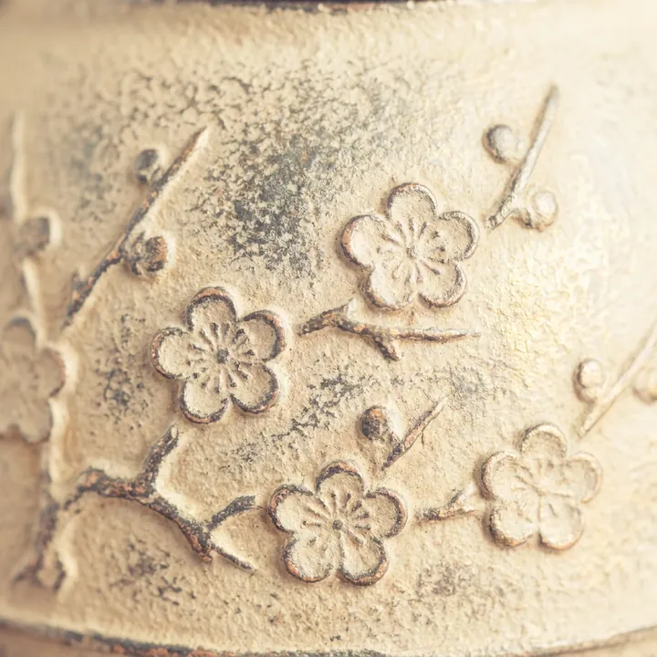
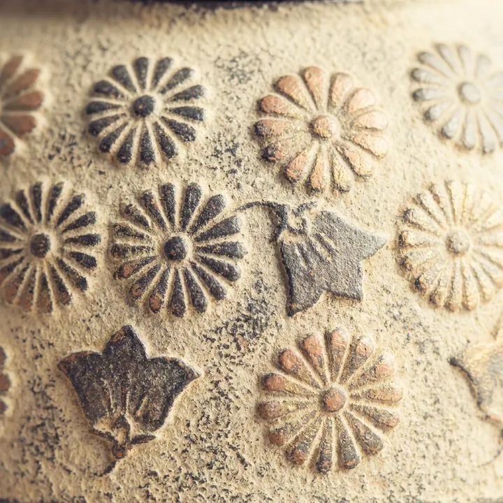
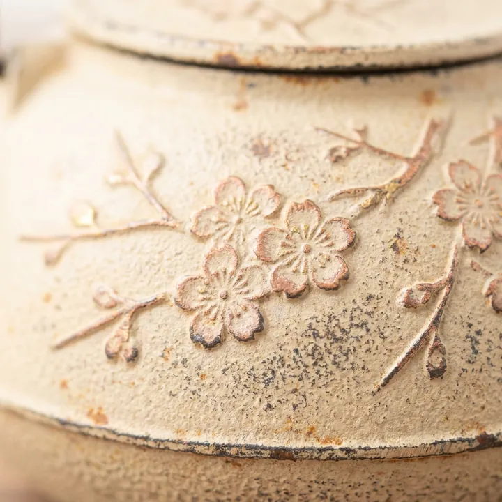
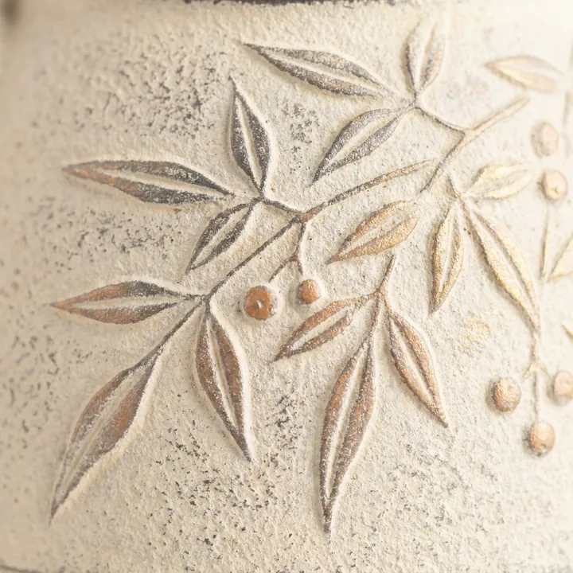
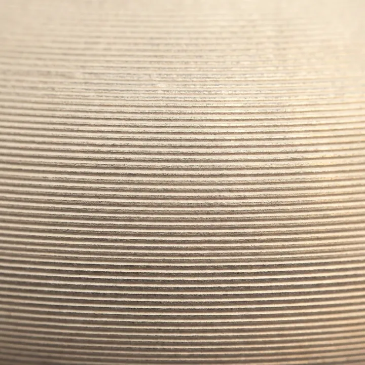
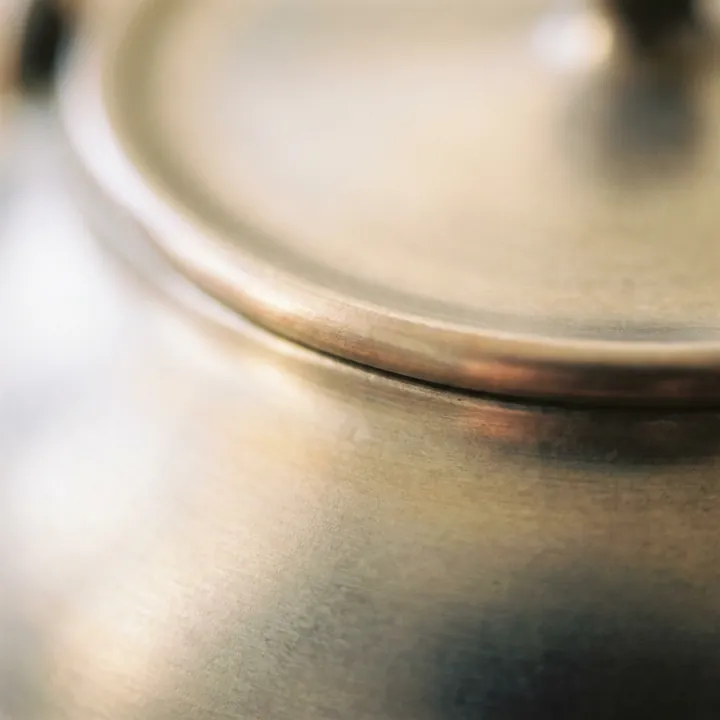

南部鉄瓶の模様の意味と由来
南部鉄瓶を選ぶとき、最後は模様の好みで決まることが少なくありません。ここでは、あられ・亀甲・瓢箪・蜻蛉・松・梅などの模様について、工房と産地組合が公式に述べていることだけを集めて整理しました。よく語られる縁起話のうち、出典が確認できなかったものについても正直に記しています。
模様は鉄瓶ではなく「鋳型」に押される
最初に、意外と誤解されている点から。南部鉄瓶のあられ模様は、できあがった鉄瓶に粒を打ち込んでいるのではありません。南部鉄器協同組合の工程解説には「鋳型の内側に紋様を押したり、鋳型の肌に肌打ちをします」とあり、押す相手は鋳型です。
岩鋳の工程解説はさらに具体的です。
挽き上げた胴型が乾燥しない間に文様を捺します。真鍮の棒の先を円錐形に尖らせた霰棒で一つひとつ捺していきます。
つまり、乾く前の鋳型に、職人が「霰棒」で一粒ずつ窪みを捺し、そこへ流し込まれた鉄が粒として写し取られる——これが南部鉄瓶の模様の成り立ちです。伝統的工芸品の指定内容でも、「挽き型」による場合は鋳型の表面に「紋様押し」又は「肌打ち」をすること、と定められています。
あられ（霰）── 南部鉄瓶を代表する文様

小さな丸い突起を一面に並べた文様です。及富は「表面にはさまざまな文様が施されていますが、その代表的な意匠は、霰（あられ）と呼ばれる小さな丸い突起があしらわれている、あられ文様です」と紹介しています。岩鋳は「代表的なあられ模様」とし、及源鋳造（OIGEN）も「南部鉄器のクラシックなアラレ模様は不動の人気です」と書いています。
あられは保温に関係するのか
「表面積が増えて熱効率が上がる」という説明を目にすることがありますが、工房や産地組合の公式サイトでこの説明は見あたりませんでした。工房が述べているのは別の理屈です。及富は、あられ文様が鉄瓶の厚みを増やして蓄熱性を向上させ、保温効果を高める役割も果たすと説明しています。表面積ではなく厚みの話である点が異なります。
由来には「説」がある
及富は、あられが大仏の螺髪（らほつ）に由来するという説もあると紹介しています。工房自身が「説もある」という書き方をしているため、本サイトでも断定はしません。
亀甲 ── 長寿・魔除けを表す吉祥文

六角形を連ねた幾何学文様です。意味づけを工房が公式に説明している模様でもあります。
- 岩鋳「鉄瓶 18型肩付亀甲」──吉祥亀甲文様で長生きを表現しています
- 及源鋳造（OIGEN）の亀甲模様の鉄瓶──長寿、健康、魔除けなどの意味を持つ吉祥文様と紹介
贈り物に意味を持たせたい場合、亀甲は根拠をもって選べる模様といえます。なお「亀の甲羅に由来する」という語源そのものを述べた工房公式の記述は見つかりませんでした。
瓢箪（ひさご）── 無病息災の語呂合わせ

及富は「瓢（ひさご）」として、丸みのあるかたちが無限大や末広がりを連想させる人気の吉祥文とし、六つひょうたんが揃えば「無病息災」といわれ、その語呂合わせからゲンを担がれることもあると紹介しています。
「瓢箪模様」と「瓢箪型」は別物
注意したいのは、瓢箪が胴の形状名として使われる場合があることです。岩鋳「鉄瓶 18型瓢箪アラレ」は、かたちが瓢箪型で、模様はあられです。商品名に瓢箪とあっても瓢箪の文様が入っているとは限りません。
蜻蛉・松・梅 ── 工房が意味を語る吉祥文
及富は「吉祥文様の意味で楽しむ南部鉄瓶の選び方」という記事で、自社の鉄瓶に描かれた文様の意味をまとめて説明しています。ここではその内容を紹介します。なお菊にも及源鋳造（OIGEN）の説明がありますが、桜・南天と並べたほうが分かりやすいため、次の草花の節にまとめました。
蜻蛉（とんぼ）── 勝虫
及富によれば、「力強く一直線に飛ぶ蜻蛉。その勇猛果敢な姿が武士の精神『不転退（退くに転ぜず）』と重なる」ことから、刀の鍔・兜・陣羽織などの武具のデザインにも多く取り入れられてきた、といいます。また肉食性で害虫を食べる様子から勝虫（かちむし）とも呼ばれ、勝負事の縁起をかつぐモチーフとして重用されてきた、とも書いています。
蜻蛉は豊穣の季節である秋を象徴する昆虫でもある、と同社は続けます。だから同社の蜻蛉鉄瓶には、同じく豊穣を意味する稲穂もあわせて描かれているのだそうです。
松 ── 長寿・不老不死
及富は松を、「寒さ厳しい冬空のもとでも緑の葉を保つことや、樹齢が長いことから、長寿や不老不死を象徴する神聖な樹」と説明しています。同社の「松葉」は松の葉をモチーフにした鉄瓶で、つまみが松ぼっくりをかたどっているのが特徴です。
梅 ── 春への兆し

梅について同社は、「寒い冬に花を咲かせ、春への兆しを表す」文様だとしています。松・竹と合わせた松竹梅として、また鶯とともに早春をあらわすモチーフとしても描かれる、とのことです。
ただし、商品名を見ただけでは梅の鉄瓶と気づけない例があります。及富の「しののめ」は、六代目及富が約50年前に創製した梅の花の鉄瓶です。商品ページは「春をいち早く知らせてくれる、日本古来より愛されてきた梅の花」とし、名前は春の訪れ・日が昇る東の雲・夜明けのイメージから付けられたと説明しています。本サイトは「しののめ」を、この工房公式の記述にもとづいて梅に分類しています。
及源鋳造（OIGEN）の「瓜形小紋梅」は、日本の伝統柄「小紋梅」をあしらった鉄瓶です。同社（OIGEN）は「細い枝を本体から蓋まで這わせて模様が鉄瓶全体をくるんでいる絵画のような鉄瓶」と説明し、蓋には「南部鉄瓶に代表される梅のつまみ」がのると書いています。
菊・桜・南天・糸目 ── 草花と線の意匠




菊
及源鋳造（OIGEN）は菊を、日本を代表する花であり、晴れ着や和食器の文様としてもおめでたさを象徴する花と紹介しています。
桜
OIGENの焼型鉄瓶「スズミ桜」では、伝統工芸士が祖父の代から受け継いだ道具を使い、一輪一輪ていねいに文様を押していると紹介されています。かつては側面に一つずつ押していたものを、代が替わって満開の桜を思わせる意匠に変えたという説明もあります。模様そのものの縁起を述べた公式の記述は見あたりませんでした。
南天
「掻羽南天」のように、銘柄名として用いられる意匠です。和柄一般では「難を転じる」という語呂合わせが語られますが、南部鉄器の工房・産地組合の公式サイトでは、この語呂合わせも、文様の由来そのものの説明も確認できませんでした。そのため本サイトでは、南天に縁起の意味づけを与えていません。
糸目
細い筋を等間隔に巡らせた文様です。薫山工房は「本体を『糸目』模様で引き締めた佇まい」と表現し、「糸目」と「荒糸目」を使い分けています。OIGENには、もとはヨーロッパへ輸出するためにデザインされたという説明の商品もあります。
姥口は模様ではなく「かたち」

模様の一覧で見かける姥口（うばぐち）は、模様の名前ではなくかたち（蓋まわりの造り）を指す名称です。本サイトでは検索の便宜のため模様の一覧に並べていますが、性質としては「かたち」の分類として整理しています。これは岩鋳の商品名を見るとはっきりします。
- 鉄瓶 9型姥口アラレ ── 姥口（かたち）＋あられ（模様）
- 鉄瓶 9型姥口亀甲 ── 姥口（かたち）＋亀甲（模様）
薫山工房は、蓋を姥口にすることで見た目上の納まりがとても良くなると説明しています。また盛岡手づくり村は、釜定が横から見た時に奥ゆかしい美しさがある姥口を多く制作していると紹介しています。
本サイトが「縁起の由来」を書かない模様について
南部鉄瓶の模様の意味は、ウェブ上で数多く語られています。しかし実際に工房・産地組合の公式サイトをあたると、意味や由来を公式に説明している模様は限られています。確認できたのは、亀甲（岩鋳・OIGEN）、瓢箪（及富）、菊（OIGEN）、蜻蛉・松・梅（及富）、そして「説もある」という留保つきのあられ（及富）でした。逆に桜・南天・糸目については、縁起の意味を述べた工房公式の記述が見つかりませんでした。
本サイトは、工房が実際に述べていることだけを模様の説明として掲載しています。出典のはっきりしない縁起話を足せば読み物としては華やかになりますが、それは南部鉄瓶を選ぶ判断材料としては使えない情報だからです。物足りなく感じる部分があるとすれば、それは確認できた事実の範囲を示した結果です。
よくある質問
Q. 南部鉄瓶で最も代表的な模様は何ですか？
あられ（霰）です。及富は、あられを南部鉄瓶の代表的な意匠と紹介しており、岩鋳・及源鋳造（OIGEN）も代表的な模様・不動の人気と説明しています。
Q. あられ模様は熱効率がよいのですか？
表面積が増えて熱効率が上がるという説明は、工房や産地組合の公式サイトでは見あたりませんでした。及富は、あられが鉄瓶の厚みを増やして蓄熱性を向上させ、保温効果を高める役割も果たすと説明しています。表面積ではなく厚みによる説明です。
Q. 南天の模様には「難を転じる」という意味がありますか？
和柄一般ではそう語られますが、南部鉄器の工房・産地組合の公式サイトでこの説明は確認できませんでした。そのため本サイトでは、南天に縁起の意味づけを与えていません。
Q. 姥口は模様ですか？
いいえ。姥口は蓋まわりの口造り、つまりかたちを指す名称です。岩鋳の9型姥口アラレ、9型姥口亀甲のように、姥口というかたちに、あられや亀甲という模様が組み合わされます。
Q. 模様は職人の手作業ですか？
伝統的な焼型では、乾く前の鋳型に職人が霰棒などの道具で一つひとつ捺していきます。一方、戦後に普及した生型は機械で砂を圧縮して型をつくる量産向けの製法ですが、生型で紋様がどのように付けられるかを説明した工房公式の情報は確認できませんでした。
Q. 模様は鉄瓶本体に打ち込むのですか？
いいえ。南部鉄器協同組合の工程解説にあるとおり、紋様は鋳型の内側に押します。鋳型に押した凹凸が、流し込まれた鉄に写し取られて模様になります。
Q. 蜻蛉（とんぼ）の模様にはどんな意味がありますか？
及富は、力強く一直線に飛ぶ蜻蛉の姿が武士の精神「不転退（退くに転ぜず）」と重なるとして、武具のデザインにも取り入れられてきたとしています。また害虫を食べる様子から勝虫（かちむし）とも呼ばれ、勝負事の縁起をかつぐモチーフだと説明しています。
Q. 梅の模様の南部鉄瓶はありますか？
あります。及源鋳造（OIGEN）の「瓜形小紋梅」や、及富の「しののめ」です。「しののめ」には銘柄名に「梅」の字がないため、名前だけでは梅の鉄瓶と気づけません。それぞれの工房の説明は本文にまとめています。
この記事に関連する銘柄
この記事で扱った模様の銘柄です。価格・容量・熱源は各工房の公式サイトまたは正規取扱店で確認した掲載時点の情報です。おすすめ順ではありません。
PR ／ アフィリエイトリンクを含みます。
模様から探す › / 容量から探す › / 熱源から探す › / 予算から探す ›
出典（外部リンク）
本記事が引用した一次ソースのうち、該当ページを特定できたものです。リンク先は別タブで開きます（2026年8月31日に到達を確認）。
出典：岩鋳（製造工程・各商品ページ）、及源鋳造 OIGEN（各商品ページ）、及富（南部鉄器の鉄瓶についての解説記事・吉祥文様の記事・各商品ページ）、薫山工房、南部鉄器協同組合（製造工程）、伝統的工芸品産業振興協会、盛岡手づくり村の各公式サイト。2026年8月10日確認、蜻蛉・松・梅の節は2026年8月31日確認。工房の説明は要旨を含みます。